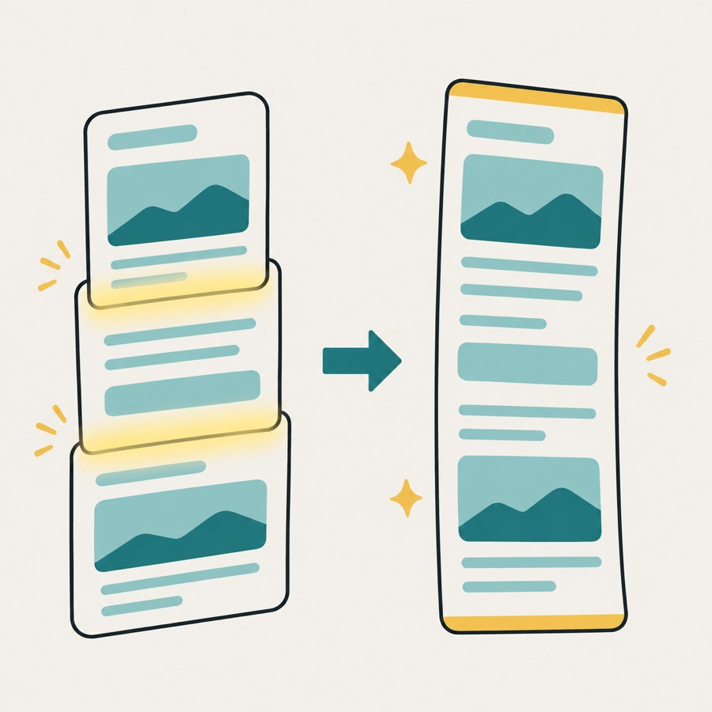

iPhone・iPad・Android の長いスクショ
長いスクショを、
つなぎ目なしの1枚に。
スクロールしながら撮った何枚かのスクショを、重なりを見つけて1枚につなぎます。上下の固定の帯は1回だけ。縮めずに、原寸のまま保存します。
App Store・Google Play で配信予定買い切りで全部の機能が使えます。アプリ内課金・サブスクリプション・広告はありません。

こんな困りごとのために
つないだら文字が読めない
縮めずに原寸のまま組みます。PNG なら文字がくっきり残ります。
上の帯が何度もはさまる
隣どうしで同じ位置にある上下の帯を見つけて、2枚目からは外します（切りかえられます）。
つなぎ目がずれる
つなぎ目ごとに、重なりを1px ずつ直せます。［自動］で元に戻せます。
順番がばらばら
選んだ順に並べます。あとから上へ・下へ・外す・足すができます。
長すぎて保存できない
決めた高さ（8,192／16,384／32,768 px）ごとに分けて保存します。
広告で保存できない
広告はありません。保存できなかったときは理由をお知らせし、もう一度保存できます。
できること
| 選ぶ | 写真のアプリのスクショを選ぶ（写真への読み取りの許可は要りません）・あとから足す |
|---|---|
| つなぐ | 重なりを自動で見つける・固定の帯を外す・つなぎ目を1px ずつ直す・並べかえ |
| 保存 | 原寸で PNG／JPEG・長いときは分けて保存・写真のアプリに保存・共有 |
| データ | 作品は端末の中だけ・通信しない・アカウントなし・解析と広告なし |
使い方・プライバシーポリシー・利用規約もご覧ください。